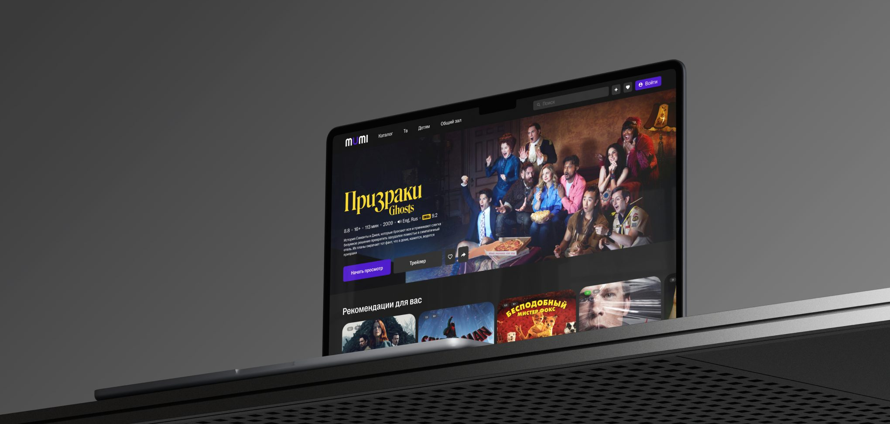
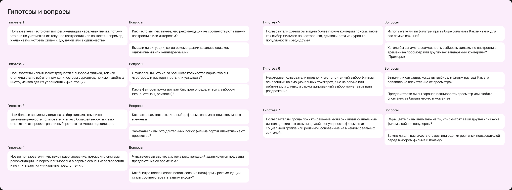
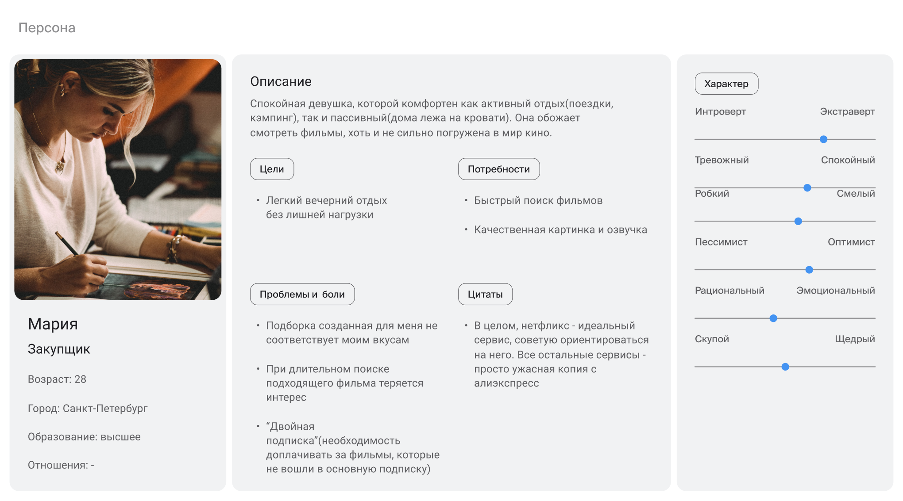
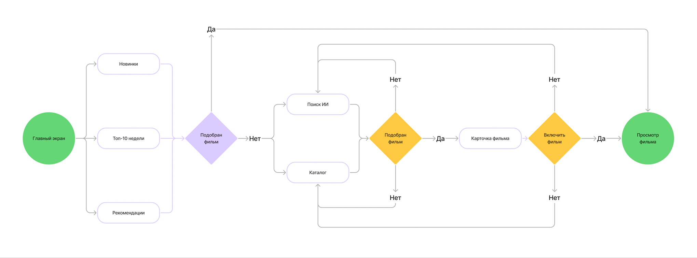
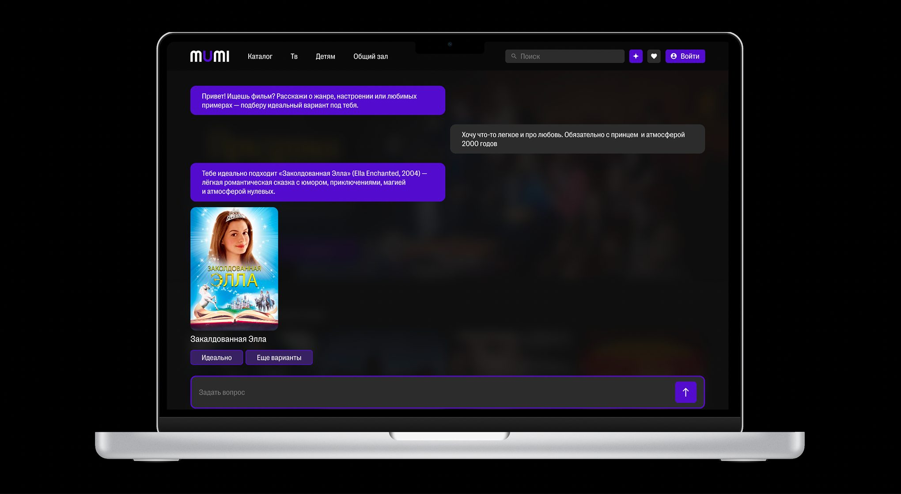
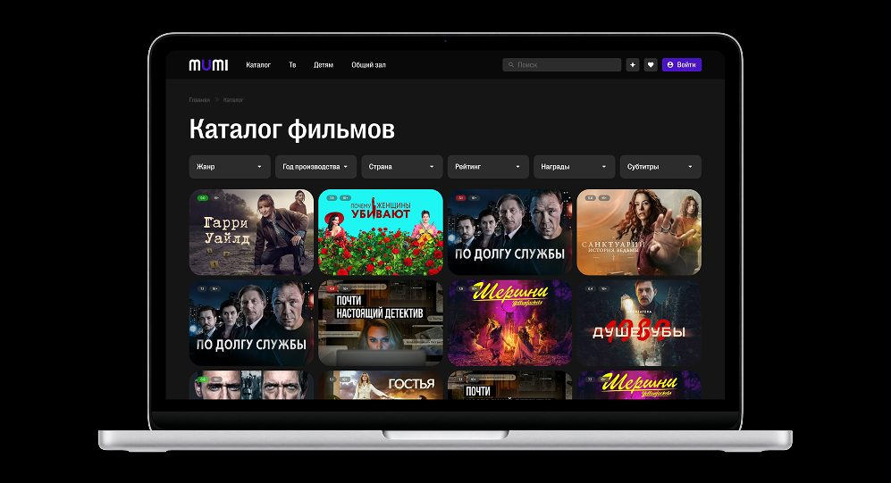
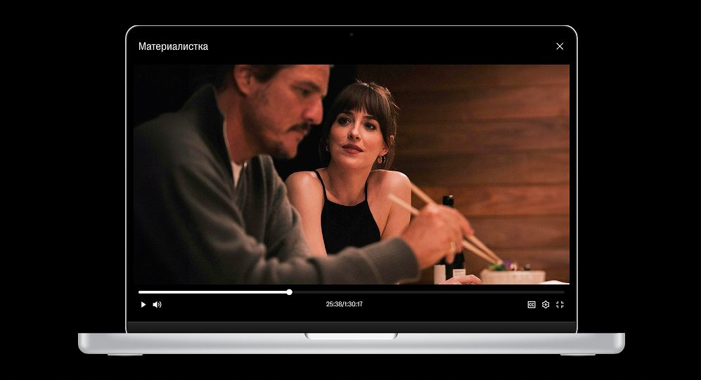

Mumi — AI-поиск кино
Учебный проект курса «UX/UI‑дизайнер», Bang Bang Education, 2026. Сервис, который помогает быстрее выбрать фильм по настроению и смыслу с помощью LLM.
Тип проекта
Учебный проект курса «UX/UI-дизайнер», Bang Bang Education, 2026
Что делала
Дерево гипотез, персона и user story, user flow, UI в тёмной теме
Платформа
Web
Контекст
Люди регулярно сталкиваются с ситуацией, когда хочется посмотреть кино, но подходящий фильм найти оказывается сложнее, чем кажется. Обычно пользователь ищет фильм сразу в нескольких источниках: ориентируется на рекомендации друзей, рейтинги, подборки стриминговых сервисов, трейлеры и рекламные рекомендации. При этом у человека часто есть довольно конкретное представление о том, что ему хочется посмотреть прямо сейчас, но традиционные каталоги предлагают искать кино преимущественно через заранее заданные категории и фильтры.
Проблема
Чем больше вариантов доступно, тем сложнее сделать выбор. Классические фильтры (жанр, год и т.д.) не учитывают эмоциональный контекст зрителя. Поиск кино превращается во вторую работу.
Задача
Дать возможность искать кино «через смыслы и эмоции» в свободной форме, не ломая при этом привычный паттерн использования каталога для тех, кто знает, чего хочет.
Исследование
От общего «хочу кино» к конкретному запросу
На этапе исследования я хотела понять, как человек формирует запрос на фильм и какие факторы влияют на его выбор. Я начала работу с построения дерева гипотез и формулирования исследовательских вопросов, чтобы нащупать истинные барьеры аудитории. Параллельно я изучила, как проблему выбора решают крупные стриминговые платформы.

На основе гипотез и анализа стриминговых платформ я сформировала персону — Марию. Я подробно расписала её пользовательский сценарий и User Story, чтобы визуализировать её боли после тяжелого рабочего дня: когда когнитивный ресурс на нуле, ей нужен максимально быстрый и легкий отдых без лишней нагрузки на мозг.

Главные инсайты: Пользователям критически не хватает возможности искать кино «через смыслы и эмоции» — то есть задать параметры поиска в абсолютно произвольной форме (описать свое настроение, желаемую атмосферу или примерный сюжет своими словами).
Поиск решения
Я выбирала между двумя концепциями: усложнением классического поиска (добавлением огромного количества тегов и микро‑фильтров вроде «грустный/веселый») или созданием полноценного диалогового интерфейса (Conversational UI) на базе ИИ. Остановилась на гибридном решении. Я сохранила привычный интерфейс каталога для пользователей с четким запросом, но вынесла «Поиск ИИ» в качестве альтернативного, более гибкого сценария для тех, кто не знает, чего хочет. Чтобы текстовое поле чата с ИИ не перегружало привычный поиск, я развела их по разным веткам архитектуры. Пользователь на глубинном уровне сам выбирает удобный ему инструмент.
Прототип и гипотеза
Главная гипотеза — добавление интеллектуального помощника прямо на развилке выбора снизит процент досрочного выхода из приложения. При проектировании логики переходов (User Flow) я детально проработала сценарий, где пользователю на главном экране ничего не подошло. Вместо тупика система предлагает ему две понятные механики: пойти в структурированный каталог или запустить ИИ‑поиск. Обе ветки бесшовно приводят человека к единой карточке фильма и кнопке просмотра.

Финальный дизайн
Все экраны интерфейса я отрисовала в глубокой темной теме, которая снижает нагрузку на глаза при вечернем просмотре и выгодно подсвечивает постеры.
Главный экран: Я сделала его структуру классической и понятной: крупный промо‑баннер, горизонтальные ленты персональных рекомендаций, «Топ‑10 за неделю» и категории по жанрам.
Каталог фильмов: Спроектировала чистую сетку карточек с удобной панелью быстрых фильтров вверху страницы (жанры, страны, годы) для тех, кто привык искать кино вручную.
Чат с ИИ (Ключевая фича): Интерфейс выполнен в формате мессенджера. Я использовала фиолетовые бабблы для сообщений, чтобы визуально отделить зону чата. Главное интерфейсное решение — ИИ выводит результаты подбора не просто скучным текстом, а в виде полноценных кликабельных карточек фильмов прямо внутри диалога.
Карточка фильма: Здесь я сделала упор на визуал — большой атмосферный стоп‑кадр на фоне, крупная типографика, оценки, награды, текстовое описание и блок с создателями фильма.



Результат
Итог — концепт с двумя путями выбора: каталог для тех, кто знает, что хочет посмотреть, и ИИ‑чат для тех, кто не знает. Оба пути ведут в одну карточку фильма.
Что проверить дальше: сокращает ли чат время от открытия до запуска фильма. Метрики — доля сессий с просмотром, время до выбора, доля запросов без подходящего ответа ИИ. В следующих итерациях: голосовой ввод, сохранение подборок и «поделиться списком с друзьями».
Вывод
Этот проект научил меня тому, как важно бережно и нативно интегрировать сложные технологические тренды (LLM, AI) в устоявшиеся пользовательские паттерны. Искусственный интеллект в интерфейсе не должен усложнять жизнь или требовать обучения — его задача стать невидимым помощником, который берет на себя рутину и разгружает пользователя в нужный момент.